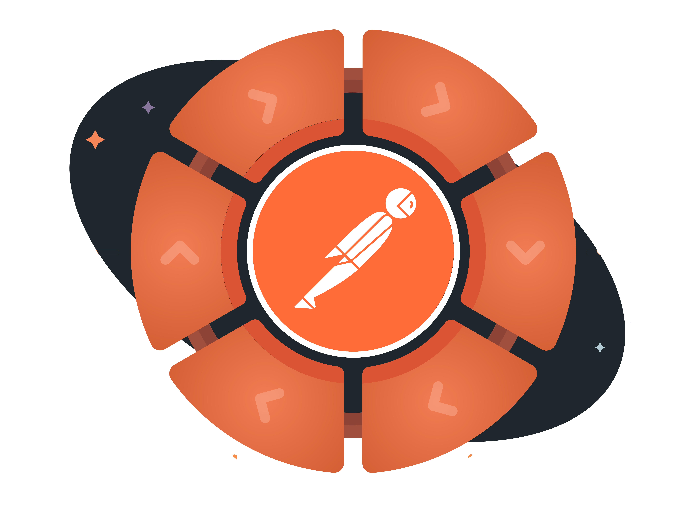

<div class="sidebar-widget mb-5 ">
   <h4 class="text-center widget-title">Platform</h4>
   <div class="media border-bottom py-3 sidebar-post-item">
      <div class="media-body">
         <a href="https://github.com/union-fashion/home/blob/master/planning/go-to-market-and-sustainment.md"></a>
         <span class="text-muted letter-spacing text-uppercase font-sm">Home</span>
         <h4 ><a href="https://github.com/union-fashion/home/blob/master/planning/go-to-market-and-sustainment.md">The default README for all APIs.</a></h4>
      </div>
   </div>
   <div class="media border-bottom py-3 sidebar-post-item">
      <div class="media-body">
         <a href="https://github.com/union-fashion/home#infrastructure-details"></a>
         <span class="text-muted letter-spacing text-uppercase font-sm">Infrastructure</span>
         <h4 ><a href="https://github.com/union-fashion/home#infrastructure-details">Explore infrastructure collections.</a></h4>
      </div>
   </div>
   <div class="media py-3 sidebar-post-item">
      <div class="media-body">
         <a href="https://github.com/union-fashion/home#api-workspaces"></a>
         <span class="text-muted letter-spacing text-uppercase font-sm">Workspaces</span>
         <h4><a href="https://github.com/union-fashion/home#api-workspaces">More information on how we setup and work within dedicated API workspaces.</a></h4>
      </div>
   </div>
   <div class="media py-3 sidebar-post-item">
      <div class="media-body">
         <a href="https://github.com/union-fashion/home#api-life-cycle-details-docs-video-walk-through"></a>
         <span class="text-muted letter-spacing text-uppercase font-sm">Lifecycle</span>
         <h4><a href="https://github.com/union-fashion/home#api-life-cycle-details-docs-video-walk-through">Details about the lifecycle used to move APIs forward from start to finish.</a></h4>
      </div>
   </div>
   <div class="media py-3 sidebar-post-item">
      <div class="media-body">
         <a href="https://github.com/union-fashion/home#governance-details-docs-video-walk-through"></a>
         <span class="text-muted letter-spacing text-uppercase font-sm">Governance</span>
         <h4><a href="https://github.com/union-fashion/home#governance-details-docs-video-walk-through">We are developing a standardized approach for governing how APIs are designed and delivered.</a></h4>
      </div>
   </div>
</div>
